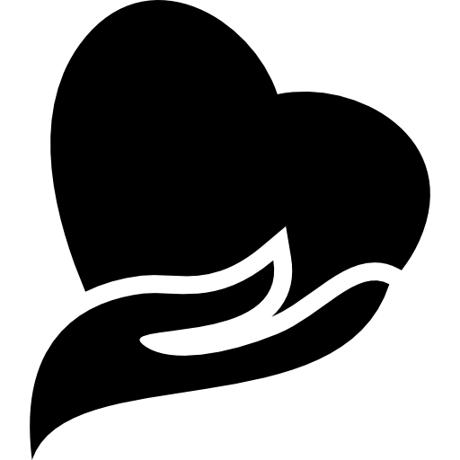
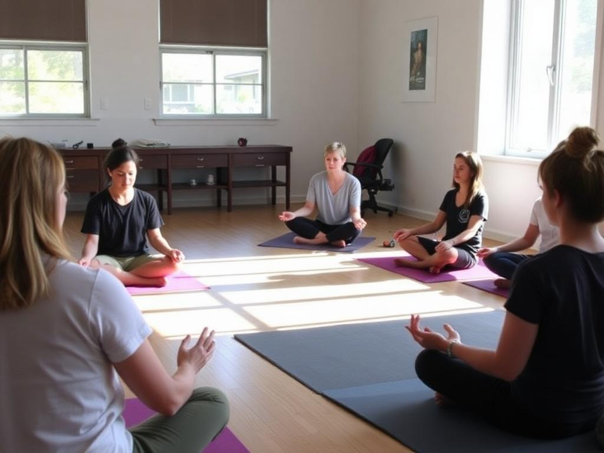
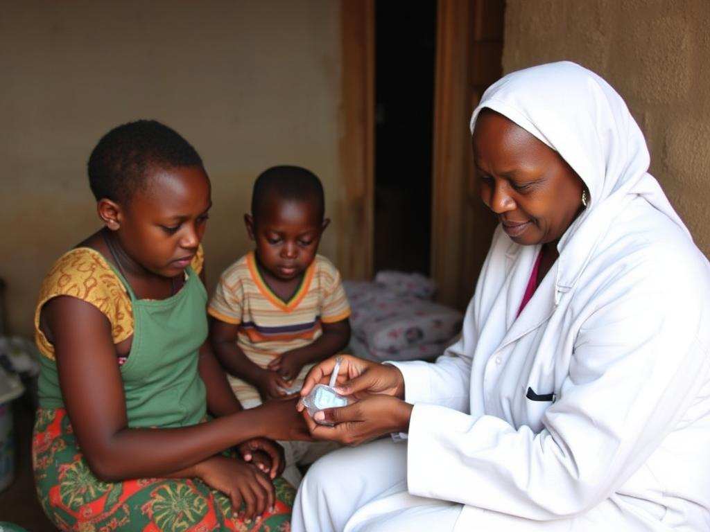
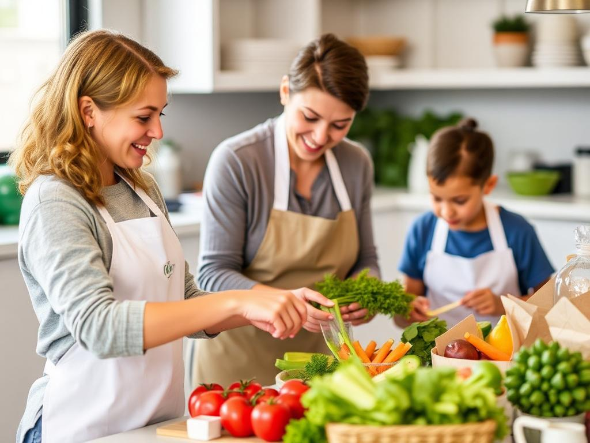
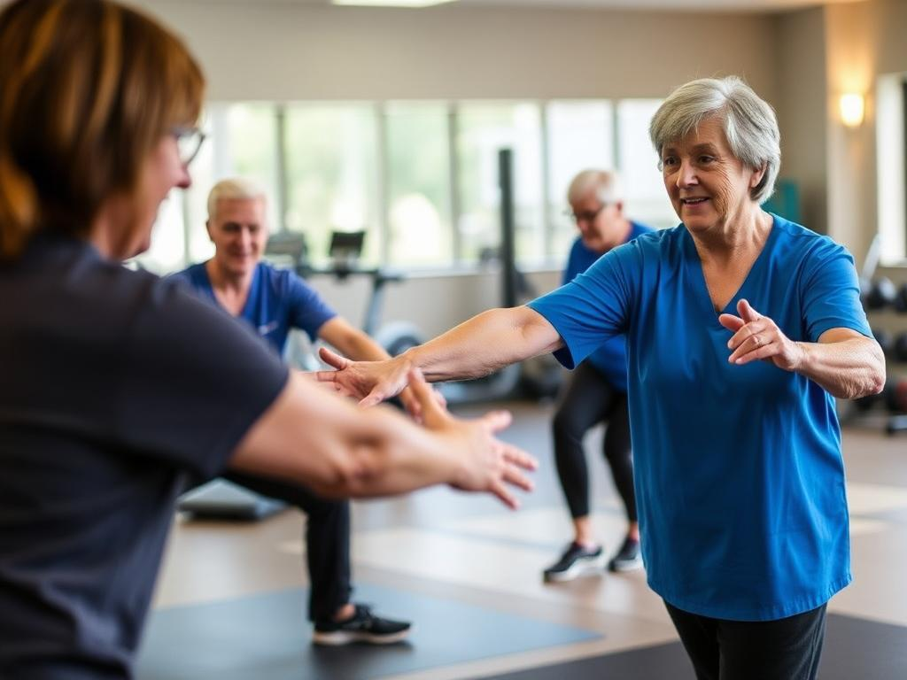

Become A Volunteer Or Help Out With An Event
Make a Difference:Join our passionate community and contribute your time and skills to meaningful projects that positively impact lives.
Experience: Whether you're looking to enhance your resume or learn new skills, volunteering provides invaluable experience in a supportive environment.
Connect & Collaborate: Meet like-minded individuals, forge new friendships, and work together to create memorable events.
Flexible Opportunities: We offer various roles to fit your schedule and interests. Every help counts, no matter how small!
Browse events
Look For An Event Near You
Join
Want To Become A Regular?

Help Comes In Many Packages
"Discover the diverse ways you can support our community. Every act of kindness, big or small, makes a difference!"
Volunteer And Member Resources
"Access essential tools and guides to enhance your volunteering experience and empower your contributions."

Want To Sponsor An Event?
"Join us as a sponsor to support our events and promote health and well-being in the community. Your partnership matters!"
Funds
Volunteers
Cities
Staff
Volunteer Opportunities
Community Teaching
Date: 2024-03-05
Childcare in Arusha
Date: 2024-03-01
Sea Turtle Conservation
Date: 2024-02-15
Mental Health Support for Youth

🧠 Counseling & Support | ⏳ 4-6 hours per day | 💰 From £450
📆 Durations: 4-12 weeks | 💵 Program Fee: £455 (🕒2 weeks)
📄 Help young individuals with mental health awareness, counseling sessions, and wellness activities in community centers.
Medical Outreach in Rural Africa

🩺 Healthcare Support | ⏳ 6-8 hours per day | 💰 From £550
📆 Durations: 2-12 weeks | 💵 Program Fee: £695 (🕒 2 weeks)
📄 Work alongside medical professionals to provide healthcare to underserved communities. Assist in medical check-ups, vaccinations, and public health campaigns.
Nutrition and Wellness Program

🥗 Well-being Education | ⏳ 5-7 hours per day | 💰 From £500
📆 Durations: 3-16 weeks | 💵 Program Fee: £651 (🕒 2 weeks)
📄 Work with local communities to improve nutrition and educate people on healthy eating and wellness habits.
Fitness and Rehabilitation for Seniors

🏋️ Physical Therapy | ⏳ 4-6 hours per day | 💰 From £475
📆 Durations: 2-8 weeks | 💵 Program Fee: £360 (🕒 2 weeks)
📄 Support elderly individuals with fitness activities, mobility training, and rehabilitation exercises to improve their well-being.
Volunteer Program Reviews
Based on 210 reviews
🌿 Inspiring Experience in Community Health
"Participating in the Community Health Outreach program was an eye-opening experience. I had the opportunity to assist doctors, interact with locals, and help in medical checkups. The impact we made was truly rewarding."
See More🌍 Transformative Work in Environmental Conservation
"Joining the Environmental Conservation program allowed me to contribute to sustainable development. Planting trees, cleaning rivers, and educating communities gave me a sense of purpose."
See More👩🏫 Volunteering in Education: A Fulfilling Journey
"Teaching young children in underprivileged communities was a deeply moving experience. Seeing them learn and grow filled my heart with joy. This program changed my perspective on education."
See MoreContact Us ✉
to Get More Information
If you have any questions about our volunteer projects, feel free to reach out!